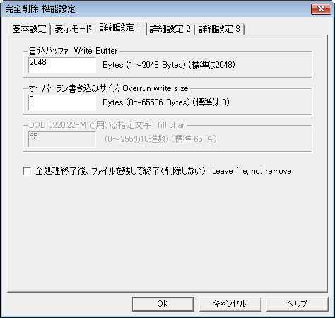

| 機能設定 ： 詳細設定１ |
|
| 機能設定 ： 詳細設定１ |
|

１回の書込み操作でディスクに書き込む（システムメモリ上の）バッファの大きさです。
通常の利用ではこの値を操作する必要性はありません。（小さな値にすると、ファイル全体の書き込みに必要なＡＰＩコールが多くなり、プログラムの速度が低下します。）
 通常は2048バイト
通常は2048バイト
ファイルに対する完全削除（上書き）処理が終了した後に、ファイルの大きさを超えて書き込みを行います。これによりデータ領域として認識されていないクラス他の残り部分に存在する（以前のデータかもしれない）領域を削除することが出来ます。
なお、ＮＴＦＳファイルシステムでＭＦＴに収まる小さなファイル（約２キロバイト程度以下と考えてください）の場合には、このオプションを指定することではＭＦＴの残り領域を埋めることは出来ません。（データ領域にデータを追いやる操作になるのみです）
ＦＡＴファイルシステムにおいては、この値を１クラスタサイズより大きくすると効果があります。
 通常は0バイト
通常は0バイト
デバッグ用のオプションです。
最終削除を行いません。
 通常はＯＦＦ
通常はＯＦＦ